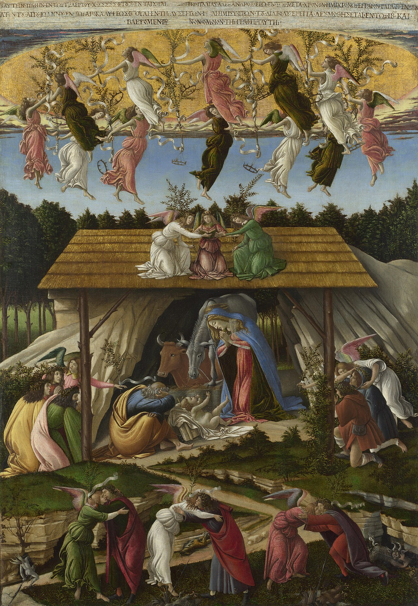
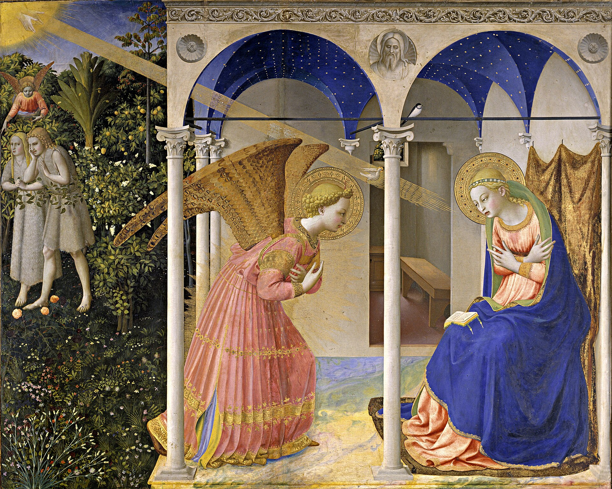
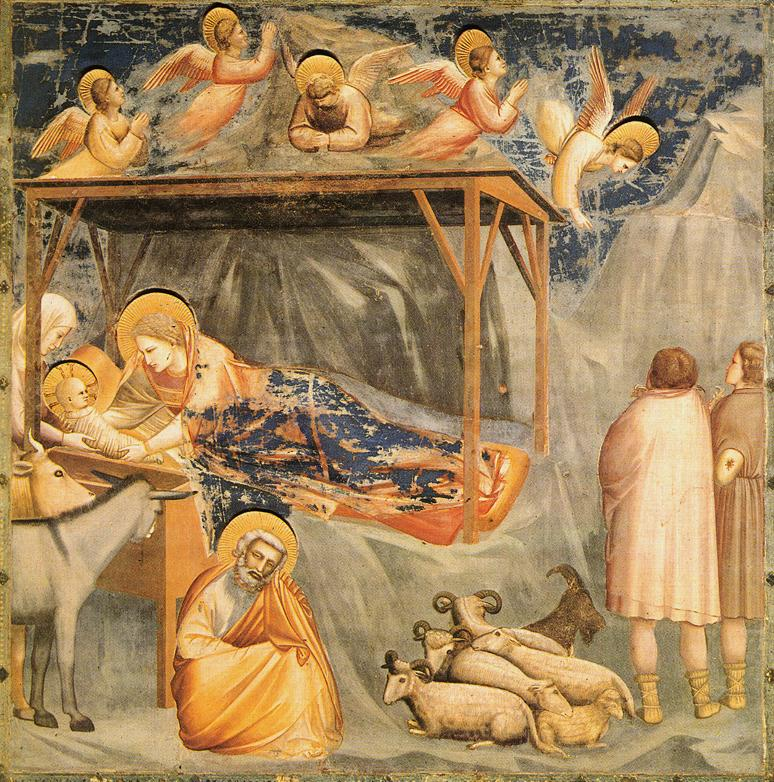
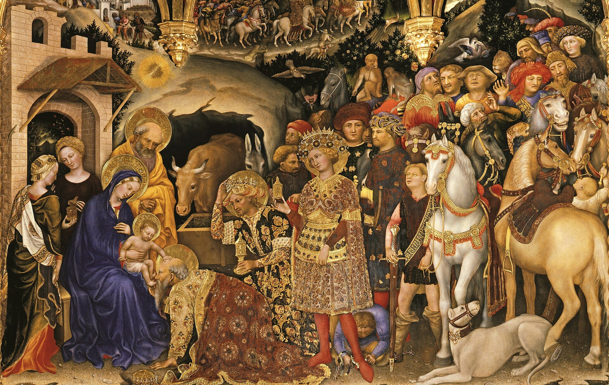
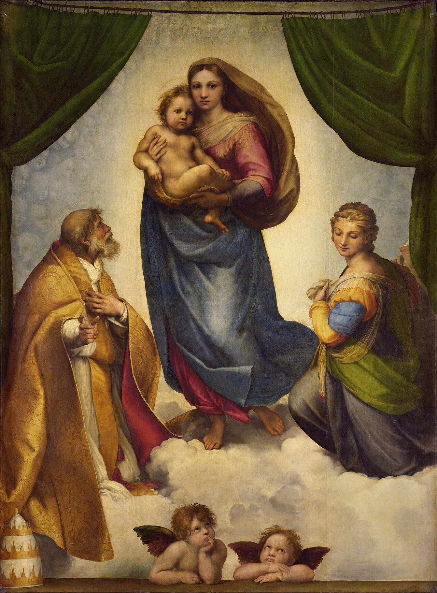

「聖言成了血肉」(若 1:14)——天主聖子取人性，為在人性內救我們，這一事實稱為「道成人身」。——天主教教理 461
在起初已有聖言，聖言與天主同在，聖言就是天主。聖言在起初就與天主同在。萬物是藉着他而造成的；凡受造的，沒有一樣不是由他而造成的。在他內有生命，這生命是人的光。光在黑暗中照耀，黑暗決不能勝過他。——若望福音 1:1-5
於是，聖言成了血肉，寄居在我們中間；我們見了他的光榮，正如父獨生者的光榮，滿溢恩寵和真理。——若望福音 1:14
天主子降生成人是唯一及無與倫比的事件，但並不是說耶穌基督一部分是天主，一部分是人；也不是天主性和人性的模糊的混合產物。祂確實成了人，但仍是真正的天主。耶穌基督是真天主，又是真人。——天主教教理 464

天使向瑪利亞問安——降生在歷史中發生，不在神話裡
「萬福！充滿恩寵者，上主與你同在！」「看，你將懷孕生子，並要給他起名叫耶穌。他將是偉大的，並被稱為至高者的兒子。」「聖神要臨於你，至高者的能力要庇廕你，因此，那要誕生的聖者，將稱為天主的兒子。」「看！上主的婢女，願照你的話成就於我罷！」——路加福音 1:26-38

萬王之王，誕生在馬槽——不是皇宮，不是聖殿
便生了她的頭胎男兒，用襁褓裹起，放在馬槽裏，因為在客棧中為他們沒有地方。「今天在達味城中，為你們誕生了一位救世者，他是主默西亞。這是給你們的記號：你們將要看見一個嬰兒，裹着襁褓，躺在馬槽裏。」「天主受享光榮於高天，主愛的人在世享平安！」——路加福音 2:1-14
你們該懷有基督耶穌所懷有的心情：他雖具有天主的形體，並沒有以自己與天主同等，為應當把持不捨的，卻使自己空虛，取了奴僕的形體，與人相似，形狀也一見如人；他貶抑自己，聽命至死，且死在十字架上。——斐理伯書 2:5-8
聖言成了血肉，是為拯救我們，使我們與天主和好。——天主教教理 457
聖言成了血肉，是為使我們因此認識天主的愛。——天主教教理 458
聖言成了血肉，是為作我們聖德的模範。——天主教教理 459
聖言成了血肉，是為使我們「成為有分於天主性體的人」。——天主教教理 460

賢士俯伏朝拜聖嬰——看見了，就不能不俯伏

她抱著的，是真天主亦真人的嬰孩
「但是，凡接受他的，他給他們，即給那些信他名字的人權能，好成為天主的子女。」